1과목: 가스유체역학
1. 다음과 같은 일반적인 베르누이의 정리에 적용되는 조건이 아닌 것은?
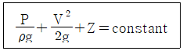
2. 압력계의 눈금이 1.2MPa를 나타내고 있으며 대기압이 720mmHg 일 때 절대압력은 몇 kPa 인가?
3. 냇물을 건널 때 안전을 위하여 일반적으로 물의 폭이 넓은 곳으로 건너간다. 그 이유는 폭이 넓은 곳에서는 유속이 느리기 때문이다. 이는 다음 중 어느 원리와 가장 관계가 깊은가?
4. 수차의 효율을 η, 수차의 실제 출력을 L[PS], 수량을 Q[m3/s]라 할 때, 유효낙차 H[m]를 구하는 식은?
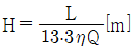
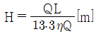
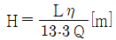
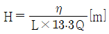
5. 펌프의 회전수를 n[rpm], 유량을 Q[m3/min], 양정을 H[m]라 할 때 펌프의 비교회전도 ns를 구하는 식은?
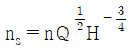
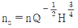
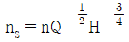
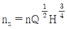
6. 원관 내 유체의 흐름에 대한 설명 중 틀린 것은?
7. 내경이 2.5×10-3m인 원관에 0.3m/s 의 평균 속도로 유체가 흐를 때 유량은 약 몇 m3/s 인가?
8. 간격이 좁은 2개의 연직 평판을 물속에 세웠을 때 모세관현상의 관계식으로 맞는 것은? (단, 두 개의 연직 평판의 간격 : t, 표면장력 : σ, 접촉각 : β, 물의 비중량 : γ, 액면의 상승높이 : hc 이다.)
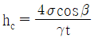
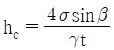
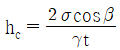
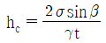
9. 원관을 통하여 계량수조에 10분 동안 2000kg의 물을 이송한다. 원관의 내경을 500mm로 할 때 평균 유속은 약 몇 m/s 인가? (단, 물의 비중은 1.0 이다.)
10. 표준대기에 개방된 탱크에 물이 채워져 있다. 수면에서 2m 깊이의 지점에서 받는 절대압력은 몇 kgf/cm2 인가?
11. 수직 충격파가 발생될 때 나타나는 현상은?
12. 구가 유체 속을 자유낙하 할 때 받는 항력 F가 점성계수 μ, 지름 D, 속도 V의 함수로 주어진다. 이 물리량들 사이의 관계식을 무차원으로 나타내고자 할 때 차원해석에 의하면 몇 개의 무차원수로 나타낼 수 있는가?
13. 단면적이 변하는 관로를 비압축성 유체가 흐르고 있다. 지름이 15cm인 단면에서의 평균속도가 4m/s 이면 지름이 20cm 인 단면에서의 평균속도는 몇 m/s 인가?
14. 강관 속을 물이 흐를 때 넓이 250cm2에 걸리는 전단력이 2N 이라면 전단응력은 몇 kg/m·s2인가?
15. 전양정 15m, 송출량 0.02m3/s, 효율 85%인 펌프로 물을 수송할 때 축동력은 몇 마력인가?
16. 어떤 유체의 운동문제에 8개의 변수가 관계되고 있다. 이 8개의 변수에 포함되는 기본 차원이 질량 M, 길이 L, 시간 T일 때 π정리로서 차원해석을 한다면 몇 개의 독립적인 무차원량 π를 얻을 수 있는가?
17. 그림은 회전수가 일정할 경우의 펌프의 특성곡선이다. 효율곡선에 해당하는 것은?
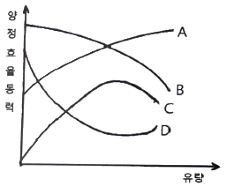
18. 그림과 같이 비중이 0.85인 기름과 물이 층을 이루며 뚜껑이 열린 용기에 채워져 있다. 물의 가장 낮은 밑바닥에서 받는 게이지 압력은 얼마인가? (단, 물의 밀도는 1000 kg/m3 이다.)
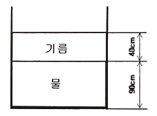
19. 압력이 100 kPa 이고 온도가 30℃인 질소(R = 0.26 kJ/kg·K)의 밀도(kg/m3)는?
20. 온도 20℃의 이상기체가 수평으로 놓인 관 내부를 흐르고 있다. 유동 중에 놓인 작은 물체의 코에서의 정체온도(stagnation temperature)가 Ts = 40℃ 이면 관에서의 기체의 속도(m/s)는? (단, 기체의 정압비열 cp = 1040 J/(kg·K)이고, 등엔트로피 유동이라고 가정한다.)
2과목: 연소공학
21. 다음 보기에서 설명하는 가스폭발 위험성 평가기법은?
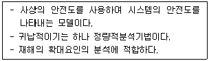
22. 랭킨 사이클의 과정은?
23. 에틸렌(Ethylene) 1Sm3을 완전 연소시키는데 필요한 공기의 양은 약 몇 Sm3 인가? (단, 공기 중의 산소 및 질소의 함량 21v%, 79v% 이다.)
24. 가스의 연소속도에 영향을 미치는 인자에 대한 설명 중 틀린 것은?
25. 418.6 kJ/kg의 내부에너지를 갖는 20℃의 공기 10kg이 탱크 안에 들어있다. 공기의 내부에너지가 502.3 kJ/kg 으로 증가할 때까지 가열하였을 경우 이때의 열량변화는 약 몇 kJ 인가?
26. 프로판 1Sm3을 공기과잉률 1.2로 완전 연소시켰을 때 발생하는 건연소 가스량은 약 몇 Sm3 인가?
27. 증기원동기의 가장 기본이 되는 동력사이클은?
28. 가연물이 되기 쉬운 조건이 아닌 것은?
29. 순수한 물질에서 압력을 일정하게 유지하면서 엔트로피를 증가시킬 때 엔탈피는 어떻게 되는가?
30. 다음 중 가역과정이라고 할 수 있는 것은?
31. 임계압력을 가장 잘 표현한 것은?
32. 최소산소농도(MOC)와 이너팅(Inerting)에 대한 설명으로 틀린 것은?
33. 파라핀계 탄화수소의 탄소수 증가에 따른 일반적인 성질변화에 옳지 않은 것은?
34. 어느 카르노 사이클이 103℃와 –23℃에서 작동이 되고 있을 때 열펌프의 성적계수는 약 얼마인가?
35. 표면연소에 대하여 가장 옳게 설명한 것은?
36. 자연 상태의 물질을 어떤 과정(Process)을 통해 화학적으로 변형시킨 상태의 연료를 2차 연료라고 한다. 다음 중 2차 연료에 해당하는 것은?
37. 다음 보기에서 열역학에 대한 설명으로 옳은 것을 모두 나열한 것은?
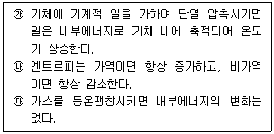
38. 폭발위험 예방원칙으로 고려하여야 할 사항에 대한 설명으로 틀린 것은?
39. 연소범위에 대한 일반적인 설명으로 틀린 것은?
40. 증기운폭발(VCE)의 특성에 대한 설명 중 틀린 것은?
3과목: 가스설비
41. 용기용 밸브는 가스 충전구의 형식에 따라 A형, B형, C형의 3종류가 있다. 가스 충전주가 암나사로 되어 있는 것은?
42. 비교회전도(비속도, ns)가 가장 적은 펌프는?
43. 고압가스 제조시설의 플레어스택에서 처리가스의 액체 성분을 제거하기 위한 설비는?
44. 고압가스 제조 장치 재료에 대한 설명으로 틀린 것은?
45. 흡입구경이 100mm, 송출구경이 90mm인 원심펌프의 올바른 표시는?
46. 저압배관에서 압력손실의 원인으로 가장 거리가 먼 것은?
47. 액화석유가스를 사용하고 있던 가스렌지를 도시가스로 전환하려고 한다. 다음 조건으로 도시가스를 사용할 경우 노즐구경은 약 몇 mm 인가?
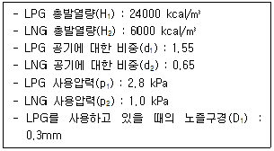
48. 고압가스 이음매 없는 용기의 밸브 부착부 나사의 치수 측정 방법은?
49. 이음매 없는 용기와 용접용기의 비교 설명으로 틀린 것은?
50. LNG, 액화산소, 액화질소 저장탱크 설비에 사용되는 단열재의 구비조건에 해당되지 않는 것은?
51. 압축기의 윤활유에 대한 설명으로 틀린 것은?
52. 액화석유가스에 대하여 경고성 냄새가 나는 물질(부취제)의 비율은 공기 중 용량으로 얼마의 상태에서 감지할 수 있도록 혼합하여야 하는가?
53. 배관용 강관 중 압력배관용 탄소강관의 기호는?
54. LP가스의 일반적 특성에 대한 설명으로 틀린 것은?
55. 중압식 공기분리장치에서 겔 또는 몰리큘라-시브(Molecular Sieve)에 의하여 주로 제거할 수 있는 가스는?
56. 저온장치용 재료로서 가장 부적당한 것은?
57. 펌프의 서징(surging)현상을 바르기 설명한 것은?
58. 끓는점이 약 –162℃로서 초저온 저장설비가 필요하며 관리가 다소 복잡한 도시가스의 연료는?
59. TP(내압시험압력)이 25MPa인 압축가스(질소) 용기의 경우 최고충전압력과 안전밸브 작동압력이 옳게 짝지어진 것은?
60. 도시가스 설비 중 압송기의 종류가 아닌 것은?
4과목: 가스안전관리
61. 고압가스용 가스히트펌프 제조 시 사용하는 재료의 허용 전단응력은 설계온도에서 허용 인장응력 값의 몇 %로 하여야 하는가?
62. 고압가스 운반차량에 설치하는 다공성 벌집형 알루미늄합금박판(폭발방지제)의 기준은?
63. 자동차 용기 충전시설에서 충전기 상부에는 닫집 모양의 캐노피를 설치하고 그 면적은 공지 면적의 얼마로 하는가?
64. 최고충전압력의 정의로서 틀린 것은?
65. 가연성가스가 대기 중으로 누출되어 공기와 적절히 혼합된 후 점화가 되어 폭발하는 가스사고의 유형으로, 주로 폭발압력에 의해 구조물이나 인체에 피해를 주며, 대구지하철공사장 폭발사고를 예로 들 수 있는 폭발의 형태는?
66. 저장탱크에 의한 LPG 사용시설에서 실시하는 기밀시험에 대한 설명으로 틀린 것은?
67. 내용적이 100L인 LPG용 용접용기의 스커트 통기 면적의 기준은?
68. 고압가스 제조 시 산소 중 프로판가스의 용량이 전체 용량의 몇 % 이상인 경우 압축하지 아니하는가?
69. 지하에 설치하는 지역정압기에는 시설의 조작을 안전하고 확실하게 하기 위하여 안전조작에 필요한 장소의 조도는 몇 룩스 이상이 되도록 설치하여야 하는가?
70. 동·암모니아 시약을 사용한 오르잣트법에서 산소의 순도는 몇 % 이상이어야 하는가?
71. 고압가스설비를 이음쇠에 의하여 접속할 때에는 상용압력이 몇 MPa 이상이 되는 곳의 나사는 나사게이지로 검사한 것이어야 하는가?
72. 염소가스의 제독제로 적당하지 않은 것은?
73. 고압가스 저장탱크를 지하에 설치 시 저장탱크실에 사용하는 레디믹스콘크리트의 설계당도 범위에 상한값은?
74. 금속플렉시블 호스 제조자가 갖추지 않아도 되는 검사설비는?
75. 액화석유가스 용기 충전 기준 중 로딩암을 실내에 설치하는 경우 환기구 면적의 합계기준은?
76. 도시가스제조소의 가스누출통보설비로서 가스경보기 검지부의 설치장소로 옳은 것은?
77. 독성가스의 운반기준으로 틀린 것은?
78. 다음 중 발화원이 될 수 없는 것은?
79. 100kPa 의 대기압 하에서 용기 속 기체의 진공압력이 15kPa 이었다. 이 용기 속 기체의 절대압력은 몇 kPa 인가?
80. 다음 ( ) 안에 순서대로 들어갈 알맞은 수치는?
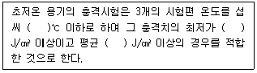
5과목: 가스계측기기
81. 다음은 기체크로마토그래프의 크로마토그램이다. t, t1, t2는 무엇을 나타내는가?
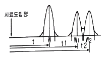
82. 기체 크로마토그래피 분석법에서 자유전자 포착성질을 이용하여 전자 친화력이 있는 화합물에만 감응하는 원리를 적용하여 환경물질 분석에 널리 이용되는 검출기는?
83. 다음 중 가장 저온에 대하여 연속 사용할 수 있는 열전대 온도계의 형식은?
84. 직접 체적유량을 측정하는 적산유량계로서 정도(精度)가 높고 고점도의 유체에 적합한 유량계는?
85. 절대습도(Absolute humidity)를 가장 바르게 나타낸 것은?
86. 가스계량기는 실측식과 추량식으로 분류된다. 다음 중 실측식이 아닌 것은?
87. 압력센서인 스트레인게이지의 응용원리는?
88. 반도체식 가스누출 검지기의 특징에 대한 설명으로 옳은 것은?
89. 비례 제어기로 60℃~80℃ 사이의 범위로 온도를 제어하고자 한다. 목표값이 일정한 값으로 고정된 상태에서 측정된 온도가 73℃~76℃로 변할 때 비례대역은 약 몇 % 인가?
90. 원형 오리피스를 수면에서 10m 인 곳에 설치하여 매분 0.6m3의 물을 분출시킬 때 유량계수 0.6인 오리피스의 지름은 약 몇 cm인가?
91. 오르자트 가스분석기의 구성이 아닌 것은?
92. 습식가스미터에 대한 설명으로 틀린 것은?
93. 국제표준규격에서 다루고 있는 파이프(pipe) 안에 삽입되는 차압 1차 장치(primary device)에 속하지 않는 것은?
94. 피토관은 측정이 간단하지만 사용 방법에 따라 오차가 발생하기 쉬우므로 주의가 필요하다. 이에 대한 설명으로 틀린 것은?
95. 가스미터가 규정된 사용공차를 초과할 때의 고장을 무엇이라고 하는가?
96. 순간적으로 무한대의 입력에 대한 변동하는 출력을 의미하는 응답은?
97. 석유제품에 주로 사용하는 비중 표시 방법은?
98. 초산납 10g을 물 90mL로 용해하여 만드는 시험지와 그 검지가스가 바르게 연결된 것은?
99. 헴펠식 가스분석법에서 수소나 메탄은 어떤 방법으로 성분을 분석하는가?
100. 다음 중 열선식 유량계에 해당하는 것은?